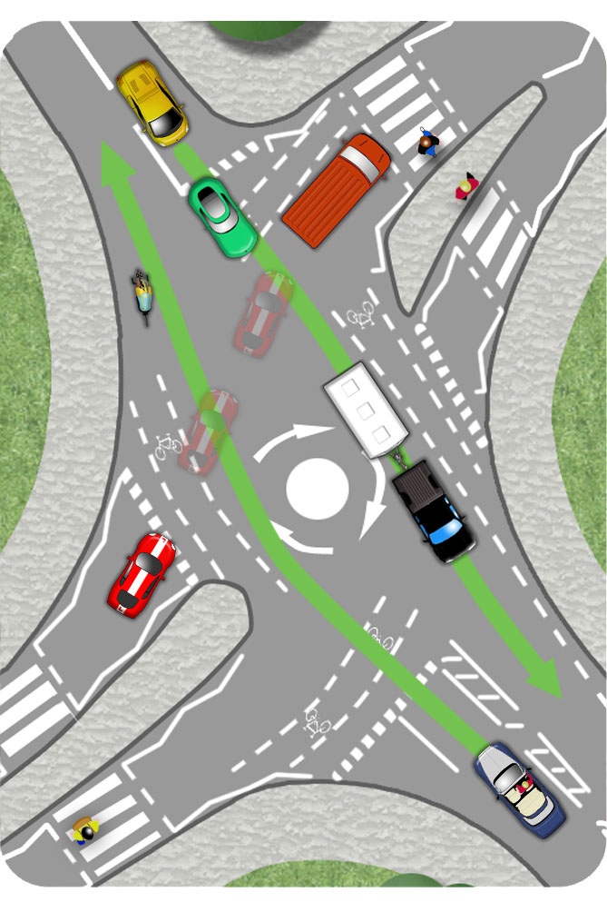

Where your exit off of the roundabout is blocked, be prepared to hold back and allow crossing traffic to flow. When your exit clears, traffic from your left will hold back and allow you to proceed.
At smaller roundabouts, it may be sensible to stay off of the roundabout until your exit is clear.
